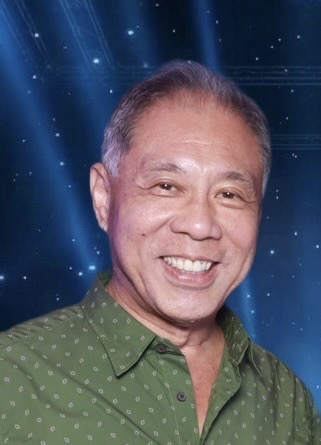

Singapore · Asia Pacific commercial leadership
Your commercial lead in Asia Pacific.
GANG TV Media launches, distributes and grows international media, streaming and sports brands across Asia Pacific. The firm is led by Gregory Ang, who has headed Asia for AMC Networks, Food Network, Sundance Channel and Scripps Networks.
Services
Three ways to work together
For brand owners, investors and boards who need senior commercial leadership in the region without building a full regional office first.
Retained APAC mandate
Gregory acts as your Managing Director for Asia Pacific and carries the commercial number.
- Carriage and distribution deals
- FAST, OTT and pay-TV launches
- Advertising and sponsorship sales
- Renewals and partner management
Interim and fractional leadership
A Chief Revenue Officer or commercial head for a fixed period or a set number of days each month.
- Market entry and first deals
- Turnaround of a regional business
- Cover during a leadership search
- Commercial due diligence for investors
Board and advisory
Independent regional judgement for boards and investors in media, streaming, sports and entertainment.
- Non-executive and advisory board seats
- Asia Pacific market and partner assessment
- Member, Singapore Institute of Directors
Track record
The line-up
Brands Gregory has led, launched or distributed in Asia Pacific, with the capacity he held for each.
- AMC Networks InternationalAsia launch · Vice President, Asia
- Sundance ChannelAsia launch · Vice President, Asia
- WE tvAsia launch · Vice President, Asia
- Scripps Networks · Food NetworkAsia launch · Led the regional business
- Hallmark ChannelVice President
- Discovery ChannelRegional sales leadership
- ESPNRegional sales leadership
- Voom HDAsia launch, 2006
- KMTV · Fashion One · Fashion 4K · Videofashion News 4KLaunch and distribution
Brand names are the property of their owners and are listed to describe past work.
Case: Food Network Asia
From no presence to six markets in two years
Gregory took on Asia for Scripps Networks in 2009 as its only executive in the region. Food Network Asia was on air in Singapore within six months. Five more markets followed in the next eighteen.
Current work
Bringing channels to ad-supported streaming across Asia
Viewing in the region is moving to free, ad-supported streaming (FAST) and OTT platforms. GANG TV Media now takes international channel brands onto those platforms in markets across Asia.
The route to market is built for channel owners who want Asia without upfront cost. Playout, localisation, scheduling and ad insertion are handled by a technology partner on a revenue-share basis, and advertising is sold programmatically across the region.
- Model
- FAST, ad revenue share
- Upfront technology fees
- None
- Coverage
- Asia-wide
- Genres sought
- Sports, lifestyle, entertainment

About
Gregory Ang
Gregory is the founder and Managing Director of GANG TV Media Pte Ltd. For about 30 years he has been the senior commercial lead in Asia for international channel brands, responsible for distribution, advertising sales, marketing and operations across the region.
He was Vice President, Asia for AMC Networks, Sundance Channel and WE tv. For Scripps Networks he launched Food Network in Asia and ran the regional business as the company's only executive there. Earlier he was Vice President at Hallmark Channel and held senior regional sales roles at ESPN and Discovery Channel. Before television he worked at Leo Burnett, American Express, Volkswagen Asia Pacific and Westin Stamford.
- Member, Singapore Institute of Directors
- BA, Mass Media and Communication Arts, University of San Francisco
- Based in Singapore, working across Asia Pacific and open to global mandates
Contact
Talk to Gregory directly.
For mandates, interim roles, board seats and channel carriage in Asia.
- Phone
- +65 9695 5845